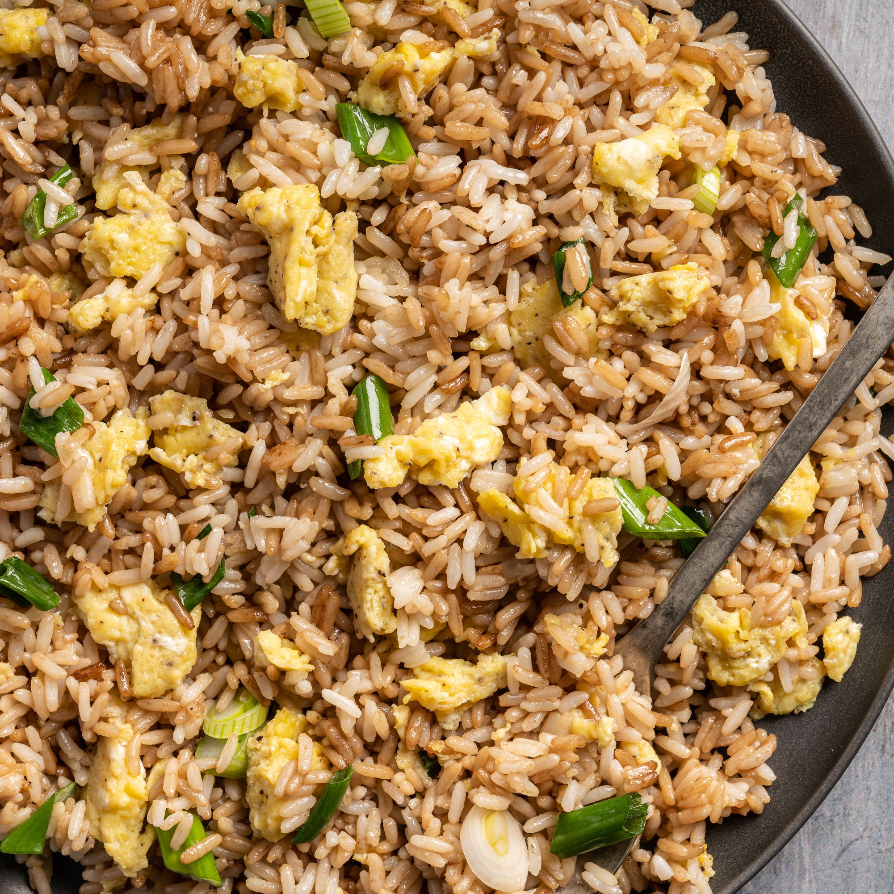

Odin Fried Rice

Description
Fried Rice is staple in any asian household. Its easy to make, ingredients are usually readily available, and versatile. Oh and of course Delicious!
Ingredients
- 1 cup of Rice
- 2 eggs
- diced onions
- finely diced garlic
- chopped green onions
- Chopped choice of protein(pork, chicken, beef, shrimp)
- 1oz soysauce
- salt and pepper
- seasme oil
- msg
Steps
- Make sure the rice is refigerated before use. Leftover rice from a day before is usually the best.
- Heat up wok and wait for it to steam. Once its steamed add the oil. Wait for the oil to start sizzling. Add
onions and garlic and simmer for 3mins. Add salt and pepper
- Add protein to wok. Toss and flip until cooked thoroughly.
- While protein is cooking, coat rice in beaten eggs
- Just before protein is done cooking, add rice to wok. Mix until egg is starts to cook
- Add soy sauce to the sides of the wok avoiding the food. mix it in well
- Keep stirring. Add your choice of spices and msg.
- after 3 mins from adding soy sauce, turn heat off
- Garnish with green onions and serve.